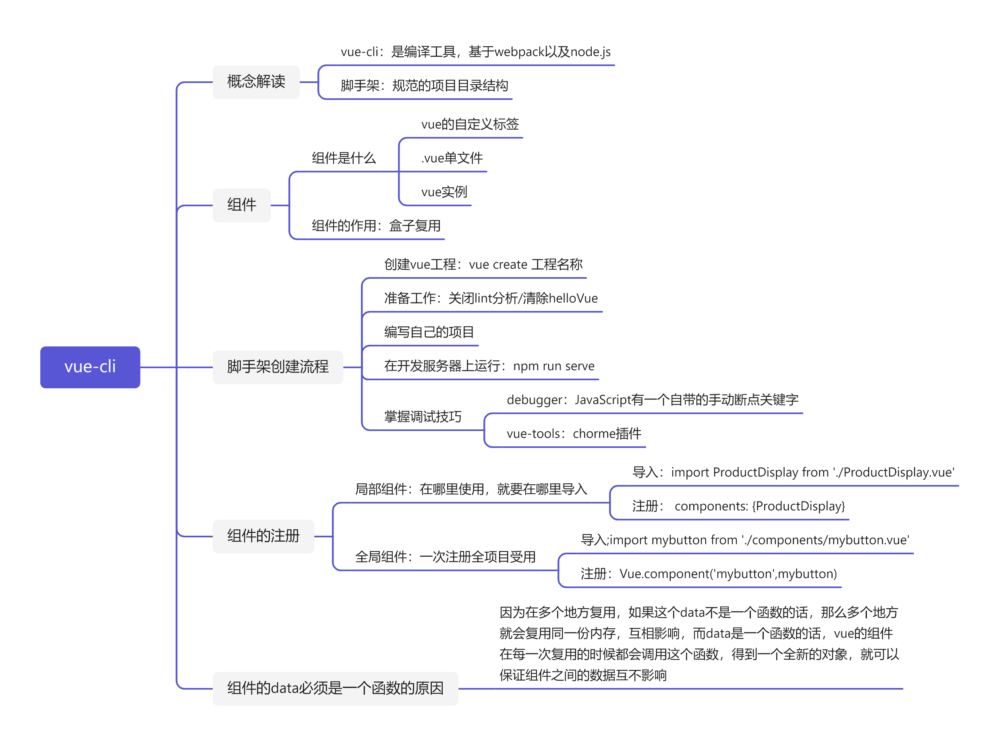
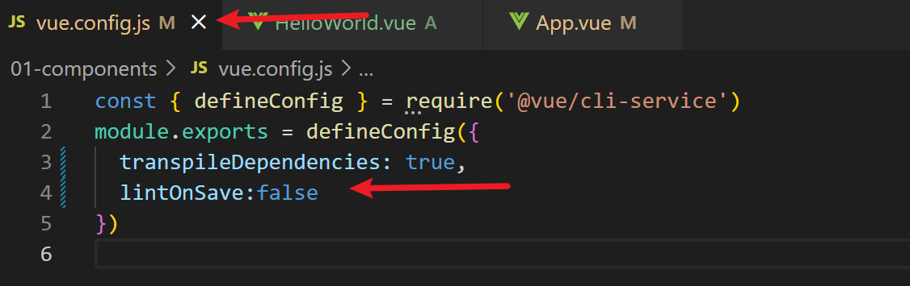

为了支持将应用程序分解为较小的单元，Vue 使你能够创建组件。 组件是可重用的构建基块，你可以基于组件创建应用程序，通俗的说，它就是一个vue自定义标签，当然你也可以把它看作一个vue实例。
可以将组件创建为 JavaScript 文件，或通过扩展名为 .vue 的单文件组件来创建组件。 单文件组件使用浏览器无法读取的专用语法。 必须将此语法转换为相应的 JavaScript、HTML 和 CSS 语法。 将专用语法转换为浏览器可读取的内容的过程称作“捆绑”，这需要额外的工具，例如 webpack。
幸运的是，Vue 还提供了可用于启动应用程序的命令行接口 (CLI)。 CLI 配置所有必备工具，包括捆绑程序和开发服务器。
俗称脚手架。
从结构的角度来说，脚手架是一种规范的项目目录结构。
Vue CLI 提供了一套开发工具，包括用于项目基架构建和快速原型设计的工具和一个开发服务器。 它帮助你快速创建初始应用程序，以便你可以专注于编码，而不是配置库和其他设置。
Vue CLI 的核心用法是启动应用程序。 Create 脚本供一个向导，你可以在其中选择一些最常见的配置:
Lint 分析选项：确保所有代码看上去一致。 这些选项还可帮助发现错误，不过有些过于严苛，推荐关闭不影响开发，修改之后需要重新编译

Vue CLI 的设计使其能处理单文件 Vue 组件或 .vue 文件。 模块捆绑程序或捆绑程序管理将 .vue 文件中的专用语法转换为相应 JavaScript、HTML 和 CSS 语法的过程，使浏览器可读取这些文件。
vue-cli的底层是webpack以及node.js,在大多数情况中，webpack 的默认配置都适用。
开发任何类型的应用程序都需要反复试验。 你需要做一些更改，在浏览器中加载页面，测试该页面，然后再进行更改。 然后重复此过程，直到一切都按照预期工作。
你希望尽量减少此过程涉及的步骤。 为了简化开发，Vue CLI 包含了一个开发服务器。 该开发服务器会在你每次保存文件时检测文件更改，重新生成（或重新捆绑）项目，并使你能在浏览器中测试页面。
Vue CLI 往往是通过 npm 全局安装的
xxxxxxxxxx
npm install -g @vue/cli
在命令窗口或终端窗口中，转到要用于存储应用程序的文件夹。
通过运行以下命令创建一个 Vue 应用程序
x
vue create 工程名称
工程名称不支持中文大写支持数字以及横杠
special tip：理论上只有cmd终端才有创建vue-cli的权限
vue为我们提供了三种创建模式:vue2.0,vue3.0以及完全手动模式
我们会发现 @vue 作为依赖项列出，@vue/cli-service 作为 devDependency 列出,这 是因为@vue/cli-service部分负责生成应用程序和运行开发服务器
请注意两个脚本:
serve 脚本用于启动开发服务器。
build 脚本用于在你准备好发布项目时，创建 JavaScript、HTML 或 CSS。
readme帮助文档里有关于这两条脚本的说明
打开将托管 Vue 应用程序的 public/index.html。
打开 src/main.js
请注意 src/components 文件夹，所有组件都将存储在其中。
component就是我们常说的组件,里面包含js,html和css,component的命名不支持中文,不支持大写英文字母
报错关键字为:invalid- 不合法
打开 src/App.vue，它包含一些工程必不可少的核心组件。
目录介绍（了解）
xxxxxxxxxx
vuecil-demo # 项目目录
├── node_modules # 项目依赖的第三方包（基本被忽略的项）
├── public # 静态文件目录
├── favicon.ico# 浏览器小图标
└── index.html # 单页面的html文件(网站首页，vue会帮我们配置好，使用较少)
├── src # 业务文件夹(项目核心文件夹，我们写的项目代码都放在这个文件夹里面)
├── assets # 静态资源（一般项目图片、css都放在这里）
└── logo.png # vue的logo图片(没啥用,vue打广告的，可删除)
├── components # 组件目录一般我们写的组件都放在这里）
└── HelloWorld.vue # 欢迎页面vue代码文件 （打广告的，可删除）
├── App.vue # 整个应用的根组件（网站首页index.htm默认会渲染这个根组件）
└── main.js # 入口js文件（入口文件，vue实例的创建，根组件的挂载都是在这里完成）
├── .gitignore # git提交忽略配置（默认已经帮我们配置好 ）
├── babel.config.js # babel配置（ES6转换ES5工具，一般不用管）
├── package.json # 依赖包列表
├── README.md # 项目说明（一般公司代码规范，人员组成之类的可以写在这里）
└── package-lock.json # 项目包版本锁定和缓存地址
└── vue.config.js # 项目webpack配置项
首先,所有的npm/yarn命令都应该在vue项目中的根目录的终端中运行
运行以下命令来启动开发服务器：
x
npm run serve
打开浏览器，然后转到 https://localhost:8080或者是你本人的ip+8080,看到vue的广告界面就启动成功了
一些文件说明
main.js的内容包括
xxxxxxxxxx
//1.导入vue框架
import Vue from 'vue'
//2.导入App.vue根组件
import App from './App.vue'
//3.控制台打印提示开关-只影响开发
Vue.config.productionTip = false
//4.创建vue实例-把vue组件挂在到id为app的元素上
new Vue({
//默认渲染App.vue组件(根组件)
render: h => h(App),
}).$mount('#app')//设置挂载点,相当于 el:'#app'
根据定义，组件是“一个较大整体中的一个部分或元素”。考虑创建应用程序时，你通常是使用较小的部分，然后将它们组合成一个较大的整体：应用程序。 Vue 使你能创建可用于创建完整应用程序的组件。它的优势在于增强了代码的复用性和可维护性。
常见的方法是使用 .vue 文件中的 Vue 语法创建单文件组件。 单文件组件拥有更清晰的结构以及更独立的设置。创建组件时，你实际上是创建可在应用程序中使用的新标记，方式类似于创建普通 HTML 标记。 这种形式的语义标记指明了页面上显示的内容。并且创建的标签是双标签。
style样式
此部分可以包含任何有效的 CSS 或你可能使用的任何预处理器的语法
你还可以使用 scoped 特性将 CSS 的范围设定为该特定组件。 样式只会仅应用于该组件，因此你可以创建类和其他设置，而无需担心会意外修改页面的其他部分。
xxxxxxxxxx
<style scoped>
.demo {
font-family: Verdana
}
</style>
scoped：它的全称叫组件的css作用域，默认情况下，如果子组件和父组件有相同的选择器样式，优先加载父组件css样式，如果希望子组件可以加载自己的样式，就可以使用scoped组件css作用域，从规范上来讲，每一个子组件最好都有这个属性
作用：给组件的css添加作用域
原理：给组件添加一个自定义属性，本质是通过css的属性选择器来增加权重
name：name属性可以让vue-tool识别并显示，最好与组件名保持一致，便于管理
script脚本
script部分存储用于组件的脚本。 和 Vue JavaScript 组件一样，你可以导出各种 Vue 属性和方法，例如data()、methods和components。
export default对象就是vue实例对象（类似于）一个文件就是一个vue实例
xxxxxxxxxx
<script>
export default {
data() {
return {
product: {
name: 'Cruise to the moon',
description: 'A cool cruise to the moon!'
}
}
},
methods:{
doClick(){
console.log(this)
}
}
}
</script>
Q：vue的data为什么是一个函数呢？
A：因为在多个地方复用，如果这个data不是一个函数的话，那么多个地方就会复用同一份内存，互相影响，而data是一个函数的话，vue的组件在每一次复用的时候都会调用这个函数，得到一个全新的对象，就可以保证组件之间的数据互不影响
template模板
template部分包含要用于显示信息并使用户能与数据交互的 HTML 模板。 使用基于 JavaScript 的组件时，template通常位于 .html 文件中，或者它是 JavaScript 文件中的字符串字面量。
template中使用的 HTML 语法与基于 JavaScript 的组件中的语法相同，这包括使用 handlebars ({{}}) 来显示数据。
xxxxxxxxxx
<template>
<div id="product">
<div>{{ product.name }}</div>
<div>{{ product.description }}</div>
</div>
</template>
模板需要有一个根元素。 也就是说，将 product 作为 id 的 div 元素不能拥有任何同级元素。 它只能拥有子元素。
如前文所述，保存单文件组件所用的扩展名是 .vue。 你可以使用 import 语句以类似的方式将这些组件加载到其他模块。 可以使用 components 属性注册它们。
组件注册后，可用作 template 内的标记。
我们把.vue单文件建在component文件夹下。
局部组件：
在哪里使用，就要在哪里导入，用一次导一次
x
<template>
<product-display></product-display>
</template>
<script>
//组件名和文件名一样便于管理
import ProductDisplay from './ProductDisplay.vue'
export default {
//注册组件
components: {
// ProductDisplay: ProductDisplay
ProductDisplay
}
}
</script>
在前面的代码中，导入了 ProductDisplay 组件，并已将它添加到 components 属性。 于是，在模板中使用
ProductDisplay 时，Vue 的编译器可以判断需要分析的是此组件，而不是常规的 HTML 元素。
全局组件：
一次注册全项目受用，任何vue的单文件都可以使用，他被注册在vue的原型中
x
import Vue from 'vue'
import App from './App.vue'
Vue.config.productionTip = false
//导入组件
import mybutton from './components/mybutton.vue'
//全局注册
Vue.component('mybutton',mybutton)
//姓名保持一致便于管理，但这不是必须行为
new Vue({
render: h => h(App),
}).$mount('#app')
JavaScript有一个自带的手动断点关键字debugger加了之后只要运行到此位置就会进入断点调试